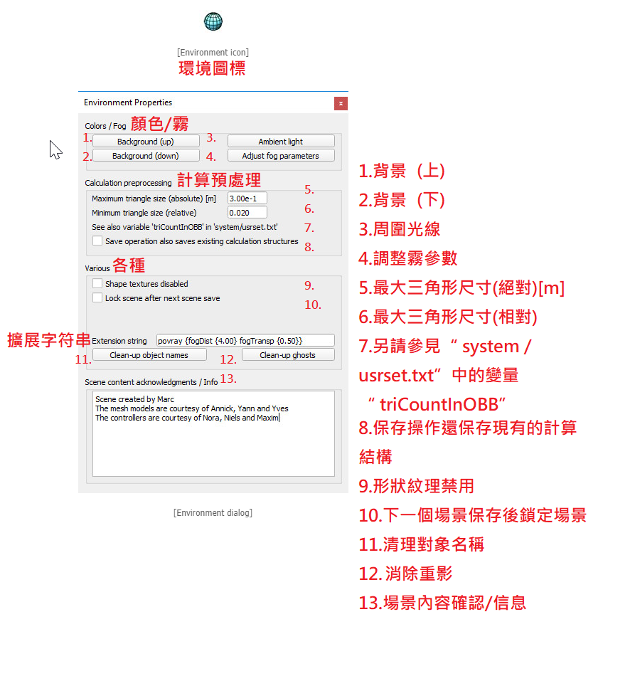

Scenes and models(場景和模型) <<
Previous Next >> Entities(實體)
Environment(環境)
The environment in CoppeliaSim defines properties and parameters that are part of a scene, but that are not scene objects. Environment properties and parameters are not saved when a model is saved, but only when a scene is saved.
CoppeliaSim中的環境定義了屬於場景但不屬於場景對象的屬性和參數。 保存模型時，沒辦法保存環境屬性和參數，但只有在保存場景時可以保存。
An environment defines following properties and parameters:
環境定義以下屬性和參數：
- Background colors.
- Fog parameters. Fog parameters are not directly interacting with scene objects, except with cameras or vision sensors if the corresponding option was selected.
- Ambient light
- Scene creation information
- Additional settings
- 背景顏色。
- 霧參數。 除已選擇相應選項的攝像機或視覺傳感器外，霧參數不會直接與場景對象交互。
- 環境光
- 場景創建信息
- 其他設置
Environment dialog(環境文字框)
The environment dialog can be accessed with [Menu bar --> Tools --> Environment] or by double-clicking following icon in the scene hierarchy:
可以使用[菜單欄->工具->環境]或通過雙擊場景階層結構中的以下圖標來打開環境對話框：

- Background (up / down): allows adjusting the background color of a scene. The up component corresponds to the upper part of the screen (sky), the down component corresponds to the lower part of the screen. The background colors are only visible when the fog functionality is disabled.
背景（上/下）：允許調整場景的背景色。向上部分對應於屏幕的上部（天空），向下部分對應於屏幕的下部。僅當禁用霧功能時，背景色才可見。
- Ambient light: allows adjusting the ambient light of a scene. The ambient light can be seen as the minimal light of a scene, it illuminates an object in the exact same way from all directions. See the section about lights for more details about illumination of a scene.
環境光：可以調整場景的環境光。可以將環境光視為場景的最小光，它從各個方向以完全相同的方式照亮對象。有關場景照明的更多詳細信息，請參見關於燈光的部分。
- Adjust fog parameters: allows to adjust various fog parameters.
調整霧參數：允許調整各種霧參數。
- Maximum triangle size (absolute): this item will not affect the visual appearance of shapes. It will however affect the execution speed of most CoppeliaSim calculation modules. When performing minimum distance calculations for instance, between two entities, execution will generally be faster if both entities are composed by similar-sized triangles. The maximum triangle size value specifies how the internal representation of a shape is handled (i.e. how elaborate the shape's calculation structure is). Small sizes will increase the preprocessing time, but generally the simulation execution speed will be increased at the same time. This value sets the overall maximum triangle size, as an absolute value. See also next item and the reduce triangle size-item in the triangle edit mode.
最大三角形尺寸（絕對值）：此項不會影響形狀的外觀。但是，它將影響大多數CoppeliaSim計算模塊的執行速度。例如，在兩個實體之間執行最小距離計算時，如果兩個實體都由大小相似的三角形組成，則執行速度通常會更快。最大三角形尺寸值指定如何處理形狀的內部表示形式（即，形狀的計算結構的詳細程度）。小尺寸將增加預處理時間，但是通常仿真執行速度會同時提高。此值將整體最大三角形大小設置為絕對值。另請參見下一項和在三角形編輯模式下的縮小三角形尺寸項目。
- Minimum triangle size (relative): similar to previous item, but this item helps avoiding creating too large calculation structures that might potentially take very long. This value sets the minimum triangle size, as a relative value (relative to a given object's largest dimension).
最小三角形尺寸（相對）：與上一個項目相似，但該項目有助於避免創建太大的計算結構，而這可能會花費很長時間。此值將最小三角形尺寸設置為相對值（相對於給定對象的最大尺寸）。
- Save operation also saves existing calculation structures: for distance calculations, collision detections, etc. a data structure is computed at the beginning of a simulation (preprocessing), or the first time a shape is involves in such calculations, in order to speed-up calculations. Calculation of that data structure might be time consuming, so the user can chose to save it together with the scene or model. However one has to be aware that the additional information that will be saved is large and will result in larger files (sometimes twice as large or more).
保存操作還會保存現有的計算結構：用於距離計算，碰撞檢測等。在模擬（預處理）開始時或第一次涉及形狀以加快速度時，會計算數據結構計算。計算該數據結構可能很耗時，因此用戶可以選擇將其與場景或模型一起保存。但是，必須注意，將要保存的附加信息很大，並且會導致文件更大（有時是兩倍或更多）。
- Shape textures disabled: if selected, then all textures applied to shapes will be disabled.
禁用形狀紋理：如果選中，則將禁用應用於形狀的所有紋理。
- Lock scene after next scene save: select this item if you want to lock your scene from edition/modification, script content viewing and resource export. After next scene save operation, the scene will be locked. Make sure you have saved the same scene in an unlocked state if you want to be able to modify it at a later time.
下一個場景保存後鎖定場景：如果要從版本/修改，腳本內容查看和資源導出中鎖定場景，請選擇此項目。下一個場景保存操作後，場景將被鎖定。如果希望以後可以修改同一場景，請確保已將其保存為未鎖定狀態。
- Extension string: a string that describes additional environment properties, mainly used by extension plugins (see also the sim.getExtensionString API function).
擴展字符串：描述附加環境屬性的字符串，主要由擴展插件使用（另請參見sim.getExtensionString API函數）。
- Clean-up object names: allows putting some order into object names with a hash tag. This is not necessary, but might be convenient to reduce the suffix numbers after the hash tags.
清理對象名稱：允許使用主題標籤將一些順序放入對象名稱中。這不是必需的，但是可以方便地減主題標記後的後綴數。
清理重影：刪除場景中可能包含的所有重影對象。另請參閱幻像錄製功能。
- Scene content acknowledgements / Info: information related to a scene. It is always good practice to acknowledge the original author of a scene, model, or imported mesh. When a scene that contains acknowledgment information is opened, it will automatically display that information.
場景內容確認/信息：與場景相關的信息。最好先確認場景，模型或導入的網格的原始作者。當一個包含確認信息的場景被打開時，它將自動顯示該信息。
Scenes and models(場景和模型) <<
Previous Next >> Entities(實體)